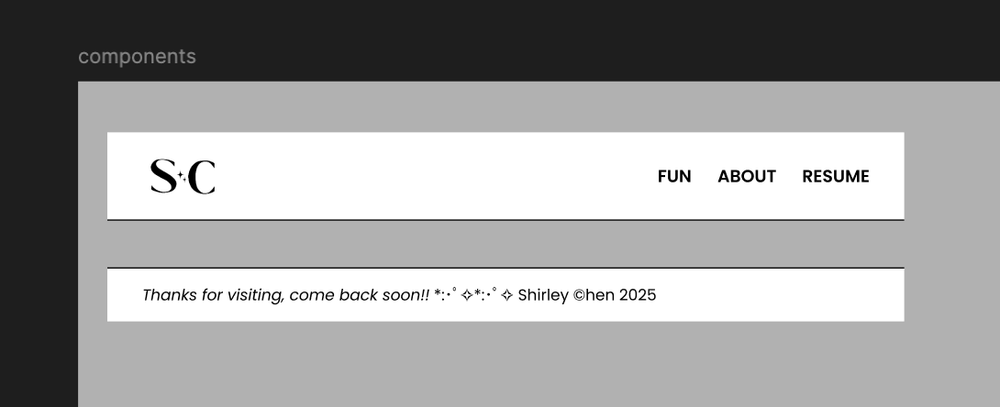
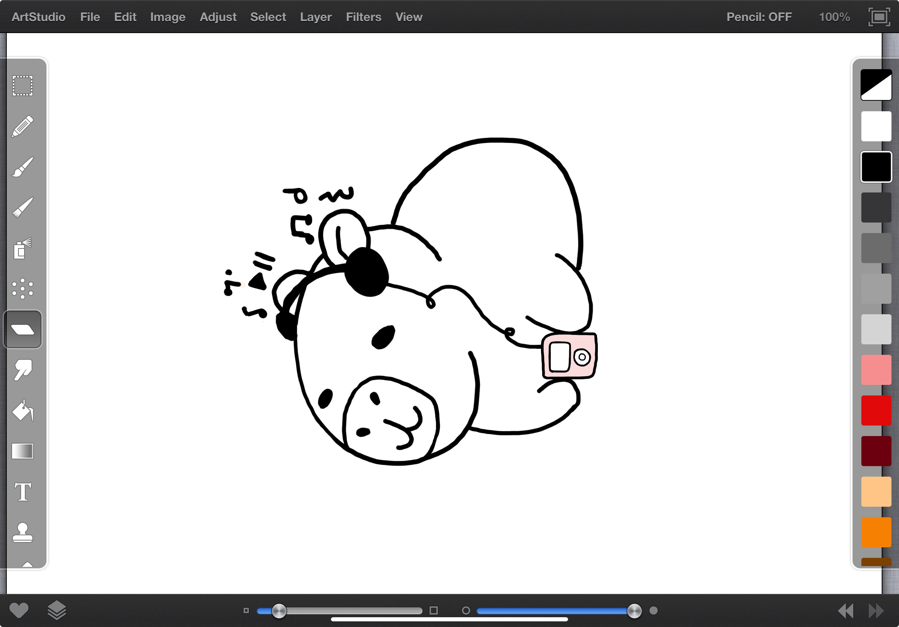
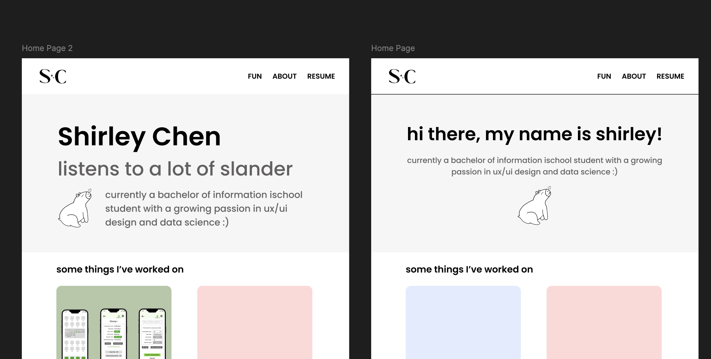
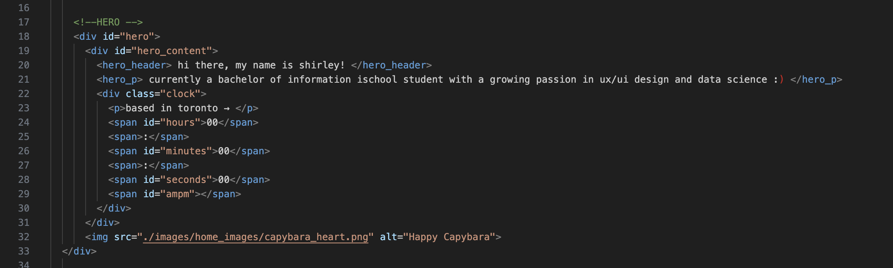

2. Process
a) Design
Although I wanted shift away from the SquareSpace website, I still liked the formatting and general aesthetic of the portfolio website I
had made for my assignment, so I decided to try and replicate what it looked like on Figma while still adding my own creative flair.

Creating components of my navbar and footer
I decided to incroporate capybaras in my website's design since they're one of my favourite animals. I used the application ArtStudio to draw the
capybaras that you see on this website.

The capybara listening to music on the landing page

Initial design planning process of the landing page
b) Development
Once I had finished my design (or at least had a good idea of the vibe I wanted to go for), I started to code out my website. For the initial development,
I followed a YouTube video to set up a basic structure. This video was mainly used for building
my navigation bar and informing me of the idea of mobile responsiveness, as I was unfamiliar with the concept before.

Code of my Hero Section (all of my code can be found on my Github)
Otherwise, there was a lot of testing and experimentation involved in the development process (shoutout to W3Schools and StackOverflow for troubleshooting purposes).
Nonetheless, planning it out on Figma definitely helped with guidance and made the whole process more manageable.